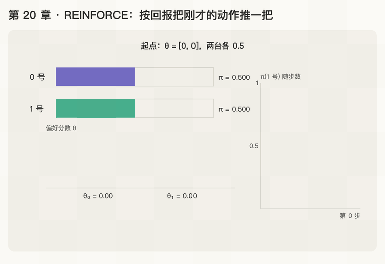

第 20 章 · 策略梯度与 REINFORCE：不学价值，直接调策略
本章回答：能不能跳过 Q，直接把策略本身调好？"让好动作更常出现"怎么写成数学？log 和那个"方便的恒等式"是干什么的？
讲解日期：2026-11-13 · 上一章：第 19 章 过估计与 Double DQN · 下一章：第 21 章 baseline 与 reward-to-go
对应原文：Sutton & Barto §13.1–13.3（L24994–L25594：softmax 策略式 13.2、策略梯度定理式 13.5、REINFORCE 式 13.8、算法框 L25503）；CS 285 第 5 讲 Part 1–2（lec-05.txtL7–L58："a convenient identity" L27）
本章缩写：PG = Policy Gradient（策略 / 梯度）；\(\pi_\theta\)：参数为 θ 的策略；\(J(\theta)\)：J 是目标函数（objective）的常用字母，策略的"总得分"；log：对数（这里都是以 e 为底的自然对数，也写 ln = natural logarithm）；REINFORCE：Williams 1992 起的名字，是一串英文首字母的缩写（REward Increment = Nonnegative Factor × Offset Reinforcement × Characteristic Eligibility），记住它就是"最基础的策略梯度算法"即可。全部缩写见 附录 · 缩写与术语表
讲解
第一步：换个思路：策略本身就是一个可以调的函数（2026-11-13）
到目前为止（第 7–19 章）都是"先学价值，再从价值里挑动作"（value-based）。
另一条路（§13.1，L24994 起）：把策略本身写成一个带参数的函数 \(\pi_\theta(a \mid s)\)，直接调 θ 让策略变好，不经过 Q。这叫策略梯度 policy gradient。
最常见的写法：softmax 策略（式 13.2，L25017–L25033）：每个动作算一个"偏好分数"\(h(s, a, \theta)\)，再用 softmax 变成概率（Transformer 讲义第 6 章）：
最小的例子：两台老虎机（第 13 章，只有一个状态）。θ = [θ₀, θ₁] 就是两台机器的偏好分数：
| θ | π(机器 0) | π(机器 1) |
|---|---|---|
| [0, 0] | 0.5 | 0.5 |
| [0, 1] | 0.27 | 0.73 |
| [−0.1, 0.1] | 0.45 | 0.55 |
θ₁ 调大一点，选机器 1 的概率就大一点。
为什么要这样做（L25040–L25100、lec-09.txt L8–L24）：
- 动作是连续的也能用（机器人关节力矩）：Q-learning 要对所有动作取 max，连续动作没法挨个比；策略直接输出一个分布（比如高斯分布），抽样就行；
- 策略可以是随机的：有些问题最优策略本身就是随机的（第 6 章石头剪刀布）；
- 稳：CS 285 第 9 讲说策略梯度是"稳定、可靠"的选择，LLM 训练和机器人 sim-to-real 几乎都用它。
目标：让策略的期望回报最大：
要用梯度上升（第 17 章的梯度下降反过来：要变大，就沿梯度走）：\(\theta \leftarrow \theta + \alpha\,\nabla J(\theta)\)。难点是：\(\nabla J\) 怎么算？
一句话：策略梯度把策略写成 \(\pi_\theta\)（常用 softmax），直接调 θ 让期望回报 \(J(\theta)\) 变大；关键是算出 \(\nabla J\)。
第二步：先补一个工具：log 和它的导数（2026-11-13）
log 是 e 的次方的反过来（Transformer 讲义第 5 章讲过 \(e^x\)）：\(\log x\) = "e 的几次方等于 x"。
| x | 1 | e ≈ 2.718 | 2 | 0.5 |
|---|---|---|---|---|
| \(\log x\) | 0 | 1 | 0.693 | −0.693 |
log 的导数是 \(\frac1x\)。用第 17 章的办法验证：在 x = 2 处往右挪 0.0001，\(\log 2.0001 - \log 2 \approx 0.00005\)，斜率 ≈ 0.00005 / 0.0001 = 0.5 = \(\frac12\) ✓。
链式法则给出一个很有用的式子：\(\log \pi\) 对 θ 求导：
CS 285 第 5 讲 L27 把右边这个叫 "a convenient identity"（一个方便的恒等式），Sutton & Barto 也用它（L25491–L25495："\(\nabla \ln x = \frac{\nabla x}{x}\)"）。
softmax 的 \(\nabla\log\pi\) 有现成答案：选了动作 a 时，
（one-hot(a)：第 a 位是 1、其余是 0 的向量。）θ = [0, 0]、选了机器 1：\([0, 1] - [0.5, 0.5] = [-0.5,\ +0.5]\)。读法：想让"选机器 1"更可能，就把 θ₁ 调高、θ₀ 调低。附录用 PyTorch 自动求导核对过。
一句话：log 是 e 的次方反过来，导数是 1/x；\(\nabla\pi = \pi\nabla\log\pi\) 是"方便的恒等式"；softmax 的 \(\nabla\log\pi(a) = \text{one-hot}(a) - \pi\)。
第三步：策略梯度定理：\(\nabla J = \mathbb{E}[\,G \cdot \nabla\log\pi\,]\)（2026-11-13）
老虎机版本的推导（只有一步，回报 G 就是这一步的奖励）：
（期望 = 每个动作的平均奖励 × 选它的概率，第 4 章。）对 θ 求导，q(a) 不依赖 θ：
中间那一步用的正是第二步的"方便恒等式"：它把 \(\sum_a \pi(a)[\dots]\) 凑了出来，于是梯度变成了一个期望。
为什么这很重要：期望可以用样本来估（第 4 章第三步）。你不知道 q(a)，但你能抽一个动作 a、拿到奖励 G，算一个 \(G\,\nabla\log\pi(a)\)，它的平均就是 \(\nabla J\)。不需要知道环境的 p，也不需要对奖励求导。
多步、多状态的一般情况（策略梯度定理，式 13.5，L25368；CS 285 第 5 讲 L26–L29）：
白话（lec-05.txt L51–L58）："好东西变得更可能，坏东西变得更不可能"，就是把"试错"写成了数学：
- G 大（这次结果好）：沿 \(\nabla\log\pi(a)\) 走得多，a 的概率涨得多；
- G 小或负：涨得少或反而降；
- 和监督学习的区别（L49）：监督学习是"让标准答案的 log 概率变大"；策略梯度是"让每个动作的 log 概率按回报加权变大"。
一句话：策略梯度定理把 \(\nabla J\) 写成期望 \(\mathbb{E}[G\,\nabla\log\pi]\)，可以用样本估；回报大的动作被推得更可能。
第四步：REINFORCE：抽一局，按回报推一把（2026-11-13）
REINFORCE（Williams 1992；式 13.8，L25471；算法框 L25503）：用一个样本估梯度，马上走一步：
老虎机上手算一步：两台机器真实平均 1.0 和 2.0（机器 1 更好）。θ = [0, 0]，α = 0.1。抽到机器 1，拿到 G = 2：
新的 π(机器 1) = softmax([−0.1, 0.1]) 的第 2 个 = \(\frac{e^{0.1}}{e^{-0.1} + e^{0.1}} \approx 0.550\)。一次就从 0.5 涨到 0.55。
原文 L25473–L25482 的直觉：更新方向是"让刚才这个动作更可能"的方向，大小正比于回报 G、反比于这个动作原来的概率（\(\nabla\log\pi = \nabla\pi / \pi\)）：常被选的动作不会因为"出现得多"就占便宜。
跑 500 步：
| 步数 | 0 | 1 | 2 | 3 | … | 500 |
|---|---|---|---|---|---|---|
| π(好机器) | 0.5 | 0.547 | 0.516 | 0.573 | … | 0.992 |
前几步上上下下（有时抽到差机器、奖励也是正的，它也被推高了），但总趋势是好机器越来越常被选。
REINFORCE 的两个特点：
- 它是蒙特卡洛的（L25483–L25487）：要用整局的回报 \(G_t\)，所以要等一局结束（同第 14 章）；
- 方差很大：注意上面"抽到差机器也被推高"：两台机器奖励都是正的，不管选哪个都会被推高，只是好的推得多一点。信号被淹没在噪声里，学得慢。下一章专门解决这个问题。
一句话：REINFORCE = 抽一个动作，θ 沿 \(G\,\nabla\log\pi\) 走一步；手算一步 π 从 0.5 到 0.55，500 步到 0.99；缺点是要等终局、方差大。
动画演示：好结果把概率推高，坏结果把概率压低

可交互版：animations/l20-policy-gradient.html（要能点按钮、拖滑块，需要用本地服务打开，见 animations/README.md"跑起来看"）。
怎么看：
- 上面是两台机器的概率条 π(0)、π(1)，下面是偏好分数 θ₀、θ₁；
- 开头先演示第四步的手算：抽到机器 1、G = 2，θ → [−0.1, 0.1]，π(1) → 0.55；
- 之后每帧抽一次：箭头显示 \(G \times \nabla\log\pi\) 往哪推、推多大；
- 右边曲线是 π(好机器)，抖着往上走到接近 1；滑块调步长 α。
练习与作答记录
题 1：θ = [0, 0]，抽到机器 0，拿到 G = 1，α = 0.1。写出 \(\nabla\log\pi(\text{机器 0})\)，算更新后的 θ。
作答：（待作答）
题 2：用自己的话解释"方便的恒等式"\(\nabla\pi = \pi\nabla\log\pi\) 在第三步起了什么作用（提示：它让梯度变成了什么）。
作答：（待作答）
题 3：两台机器奖励都是正的。REINFORCE 每次不管抽到哪台都会把它的概率推高。那为什么最后好机器还是能胜出？
作答：（待作答）
口诀
不学价值直接调策略：\(\pi_\theta\) 用 softmax，目标 \(J(\theta)\) 要变大；
log 是 e 次方反过来，导数 1/x；\(\nabla\pi = \pi\nabla\log\pi\) 把梯度变成期望；
\(\nabla J = \mathbb{E}[G\,\nabla\log\pi]\)：好的推高，坏的压低；
REINFORCE：抽一局，按回报推一把；等终局、方差大。
本章复习卡片
- R34（策略梯度定理 \(\nabla J = \mathbb{E}[G\,\nabla\log\pi_\theta(A \mid S)]\)；"方便的恒等式"\(\nabla\pi = \pi\nabla\log\pi\)）
- R35（softmax 的 \(\nabla\log\pi(a) = \text{one-hot}(a) - \pi\)；REINFORCE 更新式 13.8 与手算 0.5 → 0.55）
附录 · 延伸阅读
留给以后深入学习用，不影响本章主线。★ 是建议先读的。
推荐阅读
| 读什么 | 读哪里 | 读它为了什么 |
|---|---|---|
| ★ CS 285 第 5 讲 Part 1–2 | cs285-slides/lec-05.txt L7–L58 |
课程版推导：轨迹分布、"a convenient identity"、和最大似然的对比、高斯策略 |
| ★ Sutton & Barto §13.1–13.3 | books/sutton-barto-RLbook2020.txt L24994–L25594（式 13.2、13.5、13.8，算法框 L25503） |
本章原文；§13.2 策略梯度定理的完整证明在 L25180 的框里 |
| ★ Spinning Up "Intro to Policy Optimization" | spinningup/docs/spinningup/rl_intro3.rst |
最清楚的一份推导："Deriving the Simplest Policy Gradient"，配最短的 PyTorch 代码 |
| Spinning Up 补充证明 | spinningup/docs/spinningup/extra_pg_proof1.rst |
为什么"过去的奖励"可以去掉（接第 21 章 reward-to-go） |
| CS 285 HW2 | cs285-homeworks/hw2.txt §2.1（L21–L69）、§3（L240–L330） |
要实现的 vanilla policy gradient |
| 王树森 slides | chinese/wangshusen-DRL/Slides/4_Policy_1.pdf |
中文：策略梯度推导 |
数学原理
- 对数导数技巧 log-derivative trick：\(\nabla_\theta\pi_\theta = \pi_\theta\nabla_\theta\log\pi_\theta\)；于是 \(\nabla_\theta\mathbb{E}_{x\sim\pi_\theta}[f(x)] = \mathbb{E}_{x\sim\pi_\theta}[f(x)\nabla_\theta\log\pi_\theta(x)]\)。f 不需要可导，也不需要知道 f 的表达式。
- 轨迹版本（CS 285）：\(\pi_\theta(\tau) = p(s_0)\prod_t \pi_\theta(a_t \mid s_t)p(s_{t+1} \mid s_t, a_t)\)，取 log 以后环境的 p 和 θ 无关，求导时消失：\(\nabla\log\pi_\theta(\tau) = \sum_t\nabla\log\pi_\theta(a_t \mid s_t)\)。这就是"不需要知道 p"的原因。
- softmax 的梯度：\(\log\pi(a) = h_a - \log\sum_b e^{h_b}\)，对 \(h_c\) 求导得 \(\mathbb 1[a = c] - \pi(c)\)。
- 梯度上升：最大化 J 时 \(\theta \leftarrow \theta + \alpha\nabla J\)；代码里常写成最小化 \(-J\)（loss = −log π × G），再用普通的梯度下降。
公式清单
| 公式 | 意思 |
|---|---|
| \(\pi_\theta(a \mid s) = \frac{e^{h(s,a,\theta)}}{\sum_b e^{h(s,b,\theta)}}\) | softmax 策略（式 13.2） |
| \(J(\theta) = \mathbb{E}_{\pi_\theta}[G_0]\) | 目标：期望回报 |
| \(\nabla\pi = \pi\nabla\log\pi\) | 方便的恒等式 |
| \(\nabla J = \mathbb{E}_{\pi_\theta}[\sum_t G_t\nabla\log\pi_\theta(A_t \mid S_t)]\) | 策略梯度定理（式 13.5 的样本形式） |
| \(\theta \leftarrow \theta + \alpha G_t\nabla\log\pi_\theta(A_t \mid S_t)\) | REINFORCE（式 13.8） |
| \(\nabla\log\pi(a) = \text{one-hot}(a) - \pi\) | softmax 策略的梯度 |
代码对照：把本章的数字用代码算一遍
代码在
cs285-deep-rl/solutions/chapter-code/ch20_policy_gradient.py，测试tests/test_ch17_24.py（用 autograd 核对 softmax 梯度公式）。
同一章的 Jupyter notebook：cs285-deep-rl/solutions/chapter-code/notebooks/ch20_policy_gradient.ipynb（讲解和代码放在一起，一格一格边读边跑；代码都写在格子里，Colab 也能直接打开）。
bash cd cs285-deep-rl/solutions/chapter-code uv run python ch20_policy_gradient.py
| 讲义 | 代码 | 跑出来 |
|---|---|---|
| θ = [0, 0] 的策略 | softmax(theta) |
[0.5, 0.5] |
| ∇log π(机器 1) | grad_log_softmax(theta, 1) |
[−0.5, 0.5] |
| autograd 核对 | torch.log_softmax(t, 0)[a].backward() |
[−0.5, 0.5] |
| REINFORCE 500 步 | reinforce_bandit() |
0.547、0.516、0.573 … 0.992 |
关键几行：
g = -softmax(theta); g[a] += 1 # ∇log π(a) = one-hot(a) − π
theta += alpha * G * grad_log_softmax(theta, a) # REINFORCE
代码里才看得到的：真正的深度 RL 代码不手写梯度，而是写一个"假的 loss"让 PyTorch 求导：loss = -(log_prob * G).mean()，loss.backward() 得到的正好是 \(-G\nabla\log\pi\)。CS 285 HW2 的 update 函数就是这样写的；这个 loss 的数值本身没有意义，只有它的梯度有意义。